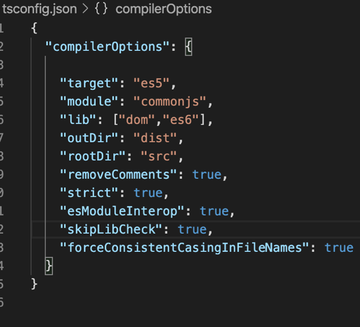
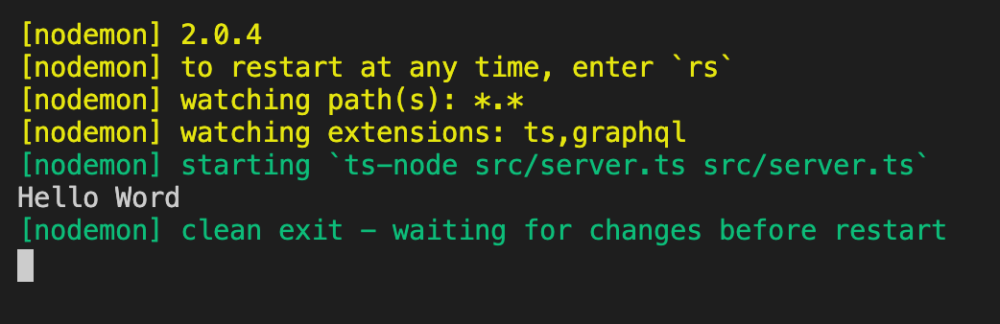
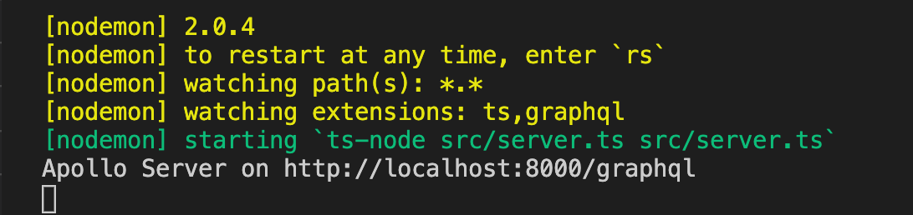
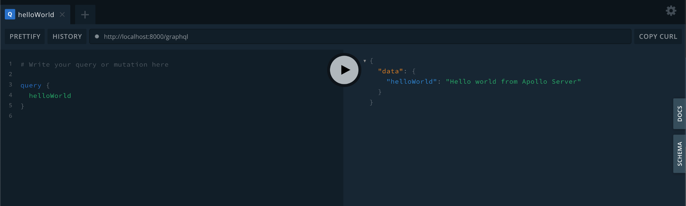
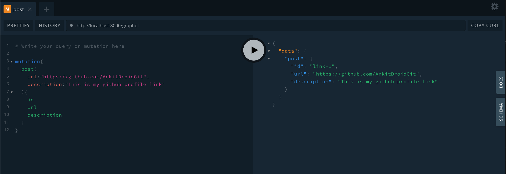

In this article, we are going to see how to build a Nodejs GraphQL API with TypeScript using Apollo Server Express.
I conducted a workshop for beginners who want to write GraphQL APIs using Typescript and Nodejs.
If it feels boring reading lots of words one by one and you can understand Hindi a bit. You can watch video tutorials for this. Video tutorials are available on my YouTube Channel as Playlsit.
Let’s understand a few terminologies before actually diving into the code.
Node.js
- Node.js is a platform built on Chrome’s JavaScript runtime for easily building fast and scalable network applications.
- Node.js uses an event-driven, non-blocking I/O model that makes it lightweight and efficient, perfect for data-intensive real-time applications that run across distributed devices.
- More document about node.js is here.
Apollo Server
- Apollo Server is an open-source, spec-compliant GraphQL server that’s compatible with any GraphQL client, including Apollo Client.
- It’s the best way to build a production-ready, self-documenting GraphQL API that can use data from any source.
- Read more about Apollo Server here.
You can use Apollo Server as:
- A stand-alone GraphQL server, including in a serverless environment
- An add-on to your application’s existing Node.js middleware (such as Express or Fastify)
- A gateway for a federated data graph.
Apollo Server provides:
- Straightforward setup, so your client developers can start fetching data quickly
- Incremental adoption, allowing you to add features as they’re needed
- Universal compatibility with any data source, any build tool, and any GraphQL client
- Production readiness, enabling you to ship features faster.
Express
- Express is a routing and middleware web framework that has minimal functionality of its own: An Express application is essentially a series of middleware function calls.
- Read more about express here
TypeScript
- TypeScript is JavaScript that scales.
- Because TypeScript is a superset of JavaScript, it doesn’t have a default template — there would be too many. Instead, other projects have their own TypeScript bootstrap templates with their own context.
Why use TypeScript over JavaScript?
If an experienced developer is working on relatively small coding projects, then JavaScript is ideal. However, if you have the knowledge and expertise development team, then Typescript is the most preferred option. Typescript has the following advantages over Javascript.
- The powerful type system, including generics & JS features
- TypeScript uses concepts like types and interfaces to describe data being used.
- The Ecosystem is quite powerful and intuitive. Thus, it allows you to statically type various types of idiomatic JavaScript features like union types, intersection, discriminated union.
- With Typescript, many npm packages either come with static type definitions or have an external one that is easy to install.
- Typescript has a feature of prototyping.
- Early spotted bugs
- Predictability
- Readability
- Power of OOP
Let’s write code for what we are here….
Creating a directory and working on
1
2
mkdir apollo-server-demo-project
cd apollo-server-demo-project
Setting up the npm project
1
npm init — yes
This command will create a package.json file in the project.
Install and initializing TypeScript for our project
Add TypeScript to our project’s npm devDependencies
1
npm install — save-dev typescript
Generate a tsconfig.json file using npx.
1
npx tsc --init --rootDir src --outDir dist --lib dom,es6 --module commonjs –removeComments
Running above command will create tsconfig.json file in the project and it will look like this.

We will also need nodemon to compile our code on change, and ts-node to exec TypeScript files.
Let’s install these 2 dependencies as well now
1
npm i nodemon ts-node --save-dev
Writing actual code now
Create a /src directory with a server.ts file and print hello world from server.ts file
1
console.log(“Hello World”);
Run below command to see the result on your terminal of project.
1
nodemon 'src/server.ts' --exec 'ts-node' src/server.ts
You will see Hello World printed on your terminal as below.

Lets now create an actual GraphQL API
Setting up Apollo-Server-Express
Installing dependencies for apollo-server-express, cors, express and graphql
1
npm install apollo-server-express cors express graphql
Installing dependencies for @types/express, @types/node, graphql-tools and graphql-import-node
1
npm install @types/express @types/node graphql-tools graphql-import-node --save-dev
Creating a simple schema and resolver
In the /src folder, create a /schema folder and create a file schema.graphql
Then let’s quickly create a resolvers.ts file in the /src folder
Create a schema.ts file in the /src folder that will be in charge of making an Executable GraphQL Schema:
Finally creating apollo-server
Run your server again open http://localhost:8000/graphql on browsers of any other graphql client software.

Let’s test your helloWolrd query from the client

Add scripts in your package.json file as below for running commands in an easier way from next time.
1
2
3
4
5
6
"scripts": {
"start": "node 'dist/server.js'",
"build": "tsc -p . && ncp src/schema dist/schema",
"start:dev": "npm run build:dev",
"build:dev": "nodemon 'src/server.ts' --exec 'ts-node' src/server.ts -e ts,graphql"
},
- Running
npm run build:devin your terminal will compile your code. - You can run the compiled code with
npm start:dev - Running
npm run buildin your terminal will compile your code and put it in the/distfolder. - You can run the compiled code with
npm start
Lets now create a Mutation GraphQL API
Add mutation object in src/schem/schema.graphql file
Add some logic for resolving mutation in src/resolvers.ts file as shown below
Run the command and test mutation from client

Happy learning and happy coding !!!
The code for this workshop is available as open source on GitHub repo.
I have tried to share some of the lessons that I have learned from various sources. I will continue to keep learning more and sharing more. I hope it helps someone and makes their life a bit easier.
Also, to be notified about my new articles and stories, follow me on Medium, Github, and Twitter. You can find me on LinkedIn as well. I am quite active on Dev Community as well and write small topics over there.
Cheers!!!!